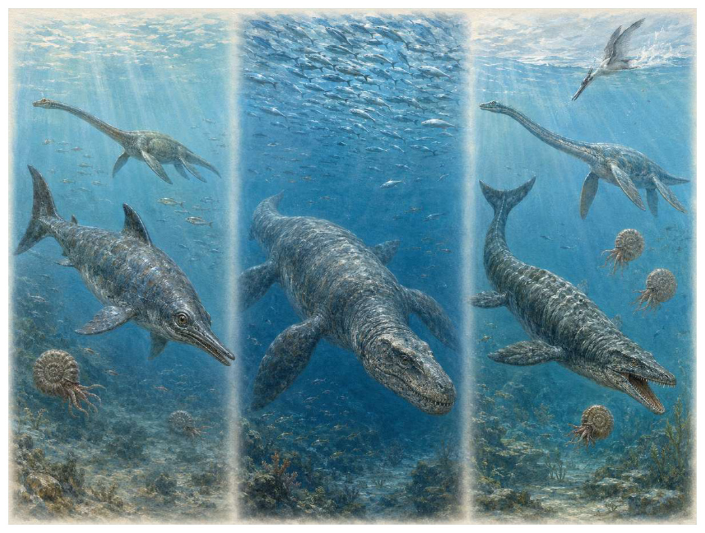
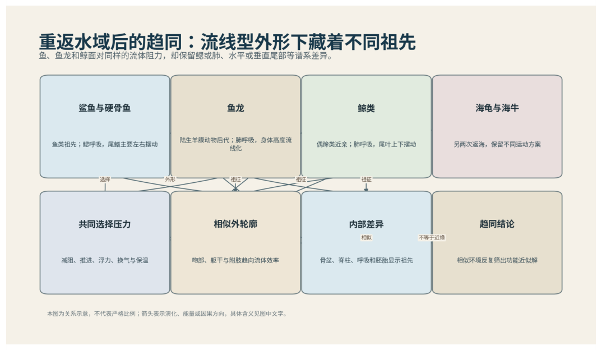

第13篇 · 白垩纪：羽毛、花与高度复杂的恐龙世界 · 第 48 章
恐龙时代的海洋：鱼龙、蛇颈龙、上龙与沧龙
本篇主题:白垩纪：羽毛、花与高度复杂的恐龙世界
被子植物扩张，昆虫关系网加密，恐龙与鸟类继续分化。

本章科学复原配图 （用于呈现结构与生态关系, 不替代化石照片、测量数据与系统发育证据。）
我们来到侏罗纪至白垩纪末。最值得注意的不是“谁最强”，而是谁能把当时有限的能量转成更多存活后代。中生代海洋爬行动物来自多次独立返海。鱼龙把身体塑成高速流线型并以尾鳍推进；蛇颈龙类用四个鳍肢‘水下飞行’，其中长颈型和短颈巨头上龙占据不同猎物；晚白垩世沧龙由有鳞类近亲演化，迅速辐射为从食贝到巨型捕食的多种形态。它们都用肺呼吸，也都不是恐龙。
进入这个时代
生态系统的真实声音不是巨兽咆哮，而是持续的摄食、分解、搬运和繁殖。每一具尸体、每一层落叶和每一次沉积扰动都会重新分配资源。侏罗纪外海，鱼龙追逐菊石和鱼群，长颈蛇颈龙在中上层用头部快速突袭，小型鲨鱼和鳄形类利用近岸；晚白垩世，沧龙进入开放海洋，潜水鸟、海龟、菊石与大型鱼构成复杂食物网。海洋从未由单一‘霸主’统治。
在“恐龙时代的海洋：鱼龙、蛇颈龙、上龙与沧龙”所覆盖的时间里，不能把地理与气候当作固定背景。海陆位置、海平面、河流或植被结构会改变资源可达性，同一性状在不同地区可能得到完全相反的选择结果。
以恐龙时代的海洋：鱼龙、蛇颈龙、上龙与沧龙为例，亲缘与外形不能混为一谈。相似身体可能来自共同祖先，也可能来自趋同；过渡类型也不是两类动物的机械拼接，而是当时能够正常摄食、运动和繁殖的完整生物。 在本章中，这一约束具体落在“流线型在鱼、鱼龙和鲸中反复出现以降低阻力”这条关系上。
再从侏罗纪至白垩纪末的时间尺度看，演化的单位是种群而不是单个英雄。个体结构影响生存，但地理分布、繁殖速度、幼体死亡率和种群规模决定变异能否保留下来。化石中最醒目的成年骨架，未必是决定支系命运的阶段。 它与“鱼龙式尾驱动”共同决定了后续变化可以沿哪些路径发生。

图 48-1 鱼、鱼龙和鲸的流线体相似，但内部结构保留不同祖先历史。
生态系统如何运转
“流线型在鱼、鱼龙和鲸中反复出现以降低阻力”还会改变可利用空间。一个支系若能进入新的水深、植被高度或沉积层，竞争会暂时减弱；随后追随者、捕食者和寄生者又会把新空间变成新的互动网络。
围绕“流线型在鱼、鱼龙和鲸中反复出现以降低阻力”，从演化树看，相似关系可能在远亲中反复出现。功能相近不必意味着近缘，而同一祖先结构也可能被后代改作完全不同的用途；生态解释必须与系统发育互相校验。 对恐龙时代的海洋：鱼龙、蛇颈龙、上龙与沧龙而言，这一后果还会与“四鳍推进提供机动性但不同于鱼类尾推进”相互放大或抵消。
把“四鳍推进提供机动性但不同于鱼类尾推进”放进食物网，可以看到它不是孤立行为。它会影响种群密度、栖息地使用和尸体进入分解链的速度，并把后果传给并未直接参与互动的物种。
围绕“四鳍推进提供机动性但不同于鱼类尾推进”，当环境快速越过生理阈值时，原有互动甚至来不及通过适应重新平衡。此时灭绝的选择性会更多取决于分布、食物来源和繁殖速度，而不是平时竞争中的相对强弱。 对恐龙时代的海洋：鱼龙、蛇颈龙、上龙与沧龙而言，这一后果还会与“颌、牙和潜水生理让返海支系分割猎物”相互放大或抵消。
理解“颌、牙和潜水生理让返海支系分割猎物”需要区分个体事件与长期压力。偶然一次捕食只改变个体命运，持续数千代的稳定关系才可能推动牙齿、外壳、感觉器官或生活史发生方向性变化。
围绕“颌、牙和潜水生理让返海支系分割猎物”，这种关系没有永恒赢家。收益随密度和环境改变：防御越常见，攻击专门化的价值越高；资源越稀少，维持昂贵结构的代价越大。化石记录中的扩张与衰退，常是这种动态平衡被外部事件打破的结果。对恐龙时代的海洋：鱼龙、蛇颈龙、上龙与沧龙而言，这一后果还会与“流线型在鱼、鱼龙和鲸中反复出现以降低阻力”相互放大或抵消。
关键演化创新
在“恐龙时代的海洋：鱼龙、蛇颈龙、上龙与沧龙”中，围绕“鱼龙式尾驱动”，“鱼龙式尾驱动”一旦出现，还会改变其他物种的环境。新的捕食方式、取食高度或繁殖场所会制造选择压力，促使整个群落而不只是发明者发生响应。 它首先需要在侏罗纪至白垩纪末的生态条件下产生可测量收益。
就“鱼龙式尾驱动”而言，化石能较可靠地记录硬组织形态，却很少直接保留基因调控与短时行为。因此结构出现通常可信，最初用途和选择路径则应按证据标为主流解释或合理推测。 本章把它与“蛇颈龙四翼式游泳”并列，是为了显示复杂性状往往依赖多部分协同。
在“恐龙时代的海洋：鱼龙、蛇颈龙、上龙与沧龙”中，围绕“蛇颈龙四翼式游泳”，“蛇颈龙四翼式游泳”没有把生物推向更高级层级，而是重新划分可利用资源。它让某些水层、食物尺寸、活动时间或繁殖地点变得可行，同时也带来能量、材料和发育控制成本。 它首先需要在侏罗纪至白垩纪末的生态条件下产生可测量收益。
就“蛇颈龙四翼式游泳”而言，其宏观影响往往滞后于结构起源。一个创新可以先在小型、稀少支系中存在数百万年，直到环境变化或竞争者灭绝后才迅速扩张；“出现”和“成为主导”是两个不同事件。 本章把它与“沧龙尾鳍与大型化”并列，是为了显示复杂性状往往依赖多部分协同。
在“恐龙时代的海洋：鱼龙、蛇颈龙、上龙与沧龙”中，围绕“沧龙尾鳍与大型化”，“沧龙尾鳍与大型化”一旦出现，还会改变其他物种的环境。新的捕食方式、取食高度或繁殖场所会制造选择压力，促使整个群落而不只是发明者发生响应。 它首先需要在侏罗纪至白垩纪末的生态条件下产生可测量收益。
就“沧龙尾鳍与大型化”而言，这也提醒我们不要寻找单一关键基因。复杂性状由多个组织和调控网络协调，改变任何一环都可能产生不同结果，演化路径因此呈树状而非直线。 本章把它与“鱼龙式尾驱动”并列，是为了显示复杂性状往往依赖多部分协同。
生命群像：把物种放回生态网络
大眼鱼龙（Ophthalmosaurus icenicus）
大眼鱼龙（Ophthalmosaurus icenicus）是晚侏罗世的一名真实生态成员，而不是通往后代的抽象过渡。它约有约4米，以深潜或昏暗水域捕食者的方式获取资源；巨大眼和流线身体适合追踪鱼与头足类反映了其祖先历史与局部选择压力共同留下的结果。
对大眼鱼龙而言，它既可能是捕食者、植食者或工程者，也同时是其他生物的猎物、竞争者和分解资源。一次取食只是一瞬，长期生态影响来自成千上万个体反复搬运营养、改变植被或扰动沉积物。体型越大，这种工程效应通常越明显，但恢复速度也常越慢。 这使“巨大眼和流线身体适合追踪鱼与头足类”不能脱离其深潜或昏暗水域捕食者角色来理解。
判断它的生活方式时，研究者首先使用巩膜环和体型支持视觉适应，潜水深度估计依生理模型。随后会检验替代解释：同样的牙是否也能处理其他食物，同样的骨骼比例是否由年龄造成，同一骨层是否来自群体生活还是灾难性聚集。排除过程比贴标签更重要。
由大眼鱼龙这个案例看，过去的复原常受完整现代动物模板影响，新材料则迫使研究者接受更陌生的身体比例或生活方式。最稳妥的表达是保留估计区间，并明确哪些软组织、颜色和社会行为仍属合理推测。 它在晚侏罗世留下的记录，因此同时是第48章所讨论的形态史和生态史的一部分。
利兹鱼（Leedsichthys problematicus）
若把镜头从时代拉近到个体，利兹鱼（Leedsichthys problematicus）会首先进入视野。它生活于中晚侏罗世，体型约可能超过10米，最大值不确定。作为巨型悬浮滤食硬骨鱼，它依靠细密鳃耙过滤浮游生物，与大型海洋爬行动物同域与环境和其他生物发生关系。
对利兹鱼而言，成年体型往往主导复原，但幼体可能使用完全不同的食物和栖息地。若成长阶段跨越多个生态位，种群就同时依赖多套环境；其中任一环节中断都可能导致长期衰退。化石骨床的年龄结构因此比单具最大标本更能说明生态。这使“细密鳃耙过滤浮游生物，与大型海洋爬行动物同域”不能脱离其巨型悬浮滤食硬骨鱼角色来理解。
关于它的直接依据是：骨架松散不完整使总长估计变化很大，显示中生代海洋巨体不只属于爬行动物。研究者还必须确认骨骼是否属于同一个体、是否被水流搬运、压扁是否改变比例，以及不同大小是否只是成长阶段。只有解剖、地层和功能证据相互一致，复原才可上调为高可信。
由利兹鱼这个案例看，它在生命史中的价值不在于离现代形态还有多远，而在于证明这一身体组合曾真实可行。即使没有直系后代，支系也可能在当时持续繁盛，并通过捕食、植食或栖息地工程改变其他生命的选择环境。 它在中晚侏罗世留下的记录，因此同时是第48章所讨论的形态史和生态史的一部分。
滑齿龙（Pliosaurus funkei）
滑齿龙（Pliosaurus funkei）存在于晚侏罗世。现有材料显示其大小约约10至12米级，生态位置接近巨头短颈海洋顶级捕食者。巨大颅骨、粗牙和强鳍肢适合攻击大型猎物让它成为理解本章主题的合适案例，但不意味着同一类群所有成员都采用相同策略。
对滑齿龙而言，这种生活方式还会反向塑造环境。摄食改变植物或猎物结构，足迹和掘穴改变沉积，尸体和排泄物把营养集中到局部。生态位不是它进入的固定房间，而是它与其他生物共同建造并持续修改的关系网络。 这使“巨大颅骨、粗牙和强鳍肢适合攻击大型猎物”不能脱离其巨头短颈海洋顶级捕食者角色来理解。
现有认识建立在体长由部分骨架推断，媒体曾大幅夸张；咬合性能依模型之上。古生物学的可信度不是来自一件戏剧化标本，而是来自多件标本、多个地点和不同方法得到相容结果。新发现若改变比例或分类，并非此前研究毫无价值，而是证据边界被重新画清。
由滑齿龙这个案例看，从生态尺度看，它与本章其他成员共同维持一张网络。任何“最强”排名都会遗漏资源供应、幼体死亡、疾病和气候脉冲；真正决定长期成功的是种群能否在波动中不断完成繁殖。 它在晚侏罗世留下的记录，因此同时是第48章所讨论的形态史和生态史的一部分。
薄片龙（Elasmosaurus platyurus）
在晚白垩世，薄片龙（Elasmosaurus platyurus）以约约10至14米的身体参与食物网。它不是孤立的“明星生物”，而是长颈海洋捕食者；极多颈椎形成长颈，小头适合接近鱼群决定它能利用哪些资源，也决定必须承担哪些成本。
对薄片龙而言，相似环境可能让远亲出现相近轮廓，但内部结构会保留祖先限制。比较它与现代类比时，应只借用可检验的功能，不把现代动物的行为、社会制度或代谢水平整套复制到古生物身上。 这使“极多颈椎形成长颈，小头适合接近鱼群”不能脱离其长颈海洋捕食者角色来理解。
支持该解释的材料包括首个复原曾把头装在尾端，后来纠正；颈部活动并非任意弯曲。若不同证据出现冲突，应优先报告范围而不是强行给出单值。例如体长会随参照类群变化，运动能力会随软组织假设变化，系统位置也会随新增性状重新计算。
由薄片龙这个案例看，它也展示专门化的双面性：结构在稳定环境中提高效率，却可能在气候、食物或竞争格局突变时限制转向。灭绝不是对设计的道德评分，而是性状、地理范围和偶然事件相遇后的历史结果。 它在晚白垩世留下的记录，因此同时是第48章所讨论的形态史和生态史的一部分。
沧龙（Mosasaurus hoffmannii）
认识沧龙（Mosasaurus hoffmannii）要先放弃静态骨架印象。它生活在晚白垩世末，约约12米以上，估计范围大，日常任务是作为大型开放海洋捕食者维持能量与繁殖。双铰接颌、圆锥齿和月牙形尾部适合强力游泳和吞食大型猎物只是这一整套生活史中最容易化石化的部分。
对沧龙而言，它既可能是捕食者、植食者或工程者，也同时是其他生物的猎物、竞争者和分解资源。一次取食只是一瞬，长期生态影响来自成千上万个体反复搬运营养、改变植被或扰动沉积物。体型越大，这种工程效应通常越明显，但恢复速度也常越慢。这使“双铰接颌、圆锥齿和月牙形尾部适合强力游泳和吞食大型猎物”不能脱离其大型开放海洋捕食者角色来理解。
我们之所以能够作出上述判断，主要因为软组织与近亲显示尾鳍，最大体型因材料归属而变化；并非海洋恐龙。单一结构通常有多种功能解释，所以还要查看磨损、病理、肌肉附着、沉积环境和近缘比较。计算模型能排除不可能姿势，却不能自动恢复没有保存的软组织。
由沧龙这个案例看，面对仍有争议的细节，负责任的复原不是停止讲述，而是标注证据等级。形态、年代和亲缘可较确定，具体姿势、叫声、求偶和群猎则按材料降级；新标本会在这些边界内继续改写认识。 它在晚白垩世末留下的记录，因此同时是第48章所讨论的形态史和生态史的一部分。
因果链：环境、生态与性状
把“鱼龙式尾驱动”拆成成本与收益，可以避免把演化创新写成无条件升级。它可能扩大摄食、运动或繁殖的边界，却要付出组织材料、发育协调和日常维持的代价；“蛇颈龙四翼式游泳”又会改变这笔账在不同生命阶段的分配。对大眼鱼龙而言，巨大眼和流线身体适合追踪鱼与头足类在成年阶段或许十分醒目，但种群能否延续仍取决于幼体是否能找到食物、是否有安全的生长场所以及环境波动后是否保留繁殖者。化石往往偏爱成年硬组织，因此书写侏罗纪至白垩纪末时必须主动补上这些不易保存却决定长期命运的环节。
从时间顺序看，“鱼龙式尾驱动”的最早记录不等于它立即改写生态系统。结构可能先以小幅变异出现在稀少支系中，经历很长的试验期，直到“流线型在鱼、鱼龙和鲸中反复出现以降低阻力”所代表的资源条件或竞争格局改变，才出现可见的辐射。反过来，一个支系在化石记录中突然繁盛，也不证明关键结构刚刚产生；保存窗口打开、地理扩散或生态位释放都能造成类似图景。因此讨论侏罗纪至白垩纪末的创新时，本章把“首次出现”“功能完善”“多样化”和“成为生态主导”分成四个问题，避免用一个日期替代整段历史。
在侏罗纪至白垩纪末，身体不是若干部件的简单相加。“鱼龙式尾驱动”只有与“沧龙尾鳍与大型化”在供能、控制和发育上兼容，才可能稳定遗传；局部性能提高若超过呼吸、循环或支撑能力，整体反而失效。滑齿龙的巨大颅骨、粗牙和强鳍肢适合攻击大型猎物因此应放进完整身体比例中解释，而不是把某一器官单独夸大。生物力学模型可以估算受力和运动范围，组织学能限制生长速度，近缘比较能提示同源关系；三者相互校验，才有可能从静态化石走向一个能够活着完成日常活动的动物或植物。
种群层面的成功还要考虑波动，而不仅是平均状态。在资源丰富年份，“蛇颈龙四翼式游泳”带来的高性能可能迅速增加个体数；在低谷年份，维持该结构的成本又会放大死亡。若利兹鱼拥有较广食谱或可迁移，便可能跨过低谷；若其细密鳃耙过滤浮游生物，与大型海洋爬行动物同域高度依赖单一环境，恢复就更困难。化石群落中的丰度峰值、体型变化和地理收缩能为这种“繁荣—压力—恢复”循环提供线索，但必须与采样偏差区分。对侏罗纪至白垩纪末的任何稳态描述，都只是长期波动中被岩层保存的一小段。
本章的因果链最终落在繁殖上。“四鳍推进提供机动性但不同于鱼类尾推进”改变个体获得资源和避开风险的方式，“鱼龙式尾驱动”改变身体能做什么，但只有这些差异持续影响配子、胚胎、幼体和成体留下后代的概率，演化频率才会跨世代变化。大眼鱼龙和利兹鱼的化石常让人关注尺寸或武器，然而巢、蛋、芽孢、孢粉、幼体壳和成长线往往更接近选择真正发生的位置。理解恐龙时代的海洋：鱼龙、蛇颈龙、上龙与沧龙，因此要把最壮观的成年结构重新接回完整生活史。
时代横截面：个体、种群与证据
证据强度也应逐句区分。软组织轮廓证明背鳍和尾鳍若直接记录形态或行为痕迹，可把某些可能性排除；胃内容物、粪化石和咬痕重建食物网若来自模型或现代类比，则通常提供范围而非唯一答案。对滑齿龙的巨大颅骨、粗牙和强鳍肢适合攻击大型猎物，我们也许能高可信地描述结构，却只能以主流解释讨论功能，以合理推测讨论日常行为。把层级写出来不会削弱故事，反而让读者知道未来新发现最可能改动哪一部分。
把结构看作模块，可以解释为什么过渡类型常显得“新旧并存”。大眼鱼龙的巨大眼和流线身体适合追踪鱼与头足类可能已经接近后来状态，而呼吸、繁殖或运动的其他部分仍保留祖征；利兹鱼可能采用另一种组合达到相似功能。演化不要求所有部件同步改变，只要求每个阶段的完整个体能够生活和繁殖。正因如此，真实谱系会产生旁支、回退和多次独立试验，而不是教科书式直梯。
再把滑齿龙加入横截面，群落关系会从两者比较变成网络。它作为巨头短颈海洋顶级捕食者，通过巨大颅骨、粗牙和强鳍肢适合攻击大型猎物连接资源与其他消费者；其数量变化可能同时影响大眼鱼龙和利兹鱼，甚至改变分解链和营养循环。这样的间接效应很少能由一具骨架直接证明，却可以从物种共现、丰度、痕迹化石和环境指标中受到约束。恐龙时代的海洋：鱼龙、蛇颈龙、上龙与沧龙的生态复原因此需要群落数据，而不只是著名标本的精细解剖。
地理同样会拆散看似整齐的时代标签。侏罗纪至白垩纪末并不是全球同时拥有同一种气候与群落：海盆深浅、纬度、山脉、河流和大陆隔离会让大眼鱼龙、利兹鱼与滑齿龙的分布错开。一个支系可能在某地区衰退、在另一地区成为避难所；后来扩散又会造成化石记录中的“重新出现”。因此本章的代表物种用于说明机制，而不意味着它们都在同一地点同一时刻相遇。
“谁取代了谁”常把复杂过程压成单线叙事。在恐龙时代的海洋：鱼龙、蛇颈龙、上龙与沧龙中，即使利兹鱼在某层位后减少、滑齿龙随后增加，也可能是二者分别响应气候或栖息地，而不是直接竞争导致淘汰。需要检查时间误差、地理重叠和资源相似度；只有三者都支持，替代关系才更可信。更多时候，生态系统通过功能重新组合过渡，旧支系与新支系会长期并存。
科学家为什么这样判断
“软组织轮廓证明背鳍和尾鳍”最有价值的地方，是它能排除某些流行复原。关节不允许的姿势、承重无法支持的速度、与沉积环境冲突的生活方式，都可以被证据淘汰；剩余模型仍可能不止一个。
“胃内容物、粪化石和咬痕重建食物网”提供的是一类约束而非完整录像。它可能精确记录某一瞬间，却未必代表全年或整个物种；也可能反映长期平均，却无法指出单次行为。把不同时间尺度的证据组合，才能重建生态过程。
“骨骼微结构与同位素研究体温和迁移”还需要与年代学绑定。只有事件先后关系可靠，才能讨论因果；若环境变化和生物响应的误差范围大量重叠，就应表述为相关或可能机制，而不是宣布已经证明。
在“恐龙时代的海洋：鱼龙、蛇颈龙、上龙与沧龙”这一问题上，把上述方法合在一起，研究者才能从残缺材料走向受约束的复原。任何一条证据都可能受到成岩、污染、样本量或现代类比的限制；结论越具体，越需要多条独立证据指向同一方向，并与侏罗纪至白垩纪末的地层背景相容。
过去的图景与今天的证据
长颈蛇颈龙并不会像天鹅一样把颈高举出水，颈椎关节和水阻力不支持这种经典姿态。沧龙并非现代巨蜥直接下海，其最近亲关系与有鳞类内部位置仍有讨论。中生代海洋爬行动物的代谢可能高于传统爬行动物形象，鱼龙和蛇颈龙的同位素研究支持较稳定体温。
围绕“恐龙时代的海洋：鱼龙、蛇颈龙、上龙与沧龙”，当多种机制可以并存时，不应为了故事简洁强迫选择唯一原因。氧气、温度、营养、捕食和地理隔离常形成反馈，研究目标是约束各环节的时间和强度，而不是寻找一句万能口号。
对侏罗纪至白垩纪末的材料而言，数据存在范围时，本书使用约数而非虚假精确值。体型会因缺失骨骼和软组织密度变化，年代会因定年误差调整，灭绝比例会因分类和采样校正改变；一个区间往往比醒目的单值更科学。
跨尺度观察
证据等级：地层年代和硬组织形态通常最强，食性若有多种独立线索可达主流解释，颜色、群居、求偶和叫声则常停留在合理推测。把等级写清并不会破坏画面，反而让读者知道想象可以走到哪里。在“恐龙时代的海洋：鱼龙、蛇颈龙、上龙与沧龙”中，这一尺度具体连接了“流线型在鱼、鱼龙和鲸中反复出现以降低阻力”与“鱼龙式尾驱动”，因而不能只从单个成年标本判断。
幼体视角：幼体常比成体更小、食物不同、耐受范围更窄。一个支系可在成年阶段拥有强大防御，却因卵、胚胎或幼体栖息地消失而灭绝。巢、蛋、成长线和年龄结构因此是解释繁殖策略的重要证据。 在“恐龙时代的海洋：鱼龙、蛇颈龙、上龙与沧龙”中，这一尺度具体连接了“四鳍推进提供机动性但不同于鱼类尾推进”与“蛇颈龙四翼式游泳”，因而不能只从单个成年标本判断。
生态工程：生物不是被动放在环境里。根系、礁体、洞穴、粪便和迁徙都会改变水流、土壤、养分与栖息地结构。工程效应一旦扩散，后续物种面对的环境已经是前一批生命共同建造的。 在“恐龙时代的海洋：鱼龙、蛇颈龙、上龙与沧龙”中，这一尺度具体连接了“颌、牙和潜水生理让返海支系分割猎物”与“沧龙尾鳍与大型化”，因而不能只从单个成年标本判断。
通向下一个时代
从本章走向下一阶段时，需要保留的不是一串物种名，而是一个因果链：环境改变可用能量与栖息地，生态关系筛选性状，性状又反过来改造环境。这些高度适应海洋的支系在K-Pg事件中全部消失，留下的生态位后来被鲨、硬骨鱼、鲸、鳍足类和海鸟重新占据。返海因此是趋同演化最壮观的连续实验之一。
本章精选来源
- [R68] Xu, X. et al. An integrative approach to understanding bird origins. Science 346, 1253293 (2014).
- [R69] Brusatte, S. L., O’Connor, J. K. & Jarvis, E. D. The origin and diversification of birds. Current Biology 25, R888-R898 (2015).
- [R70] O’Connor, J. K. & Zhou, Z. Early evolution of the biological bird: perspectives from new fossil discoveries in China. Journal of Ornithology 156, 333-342 (2015).
- [R78] Luo, Z.-X. et al. Evolutionary development in basal mammaliaforms as revealed by a docodontan. Science 347, 760-764 (2015).
- [R79] Grossnickle, D. M., Smith, S. M. & Wilson, G. P. Untangling the multiple ecological radiations of early mammals. Trends in Ecology & Evolution 34, 936-949 (2019).